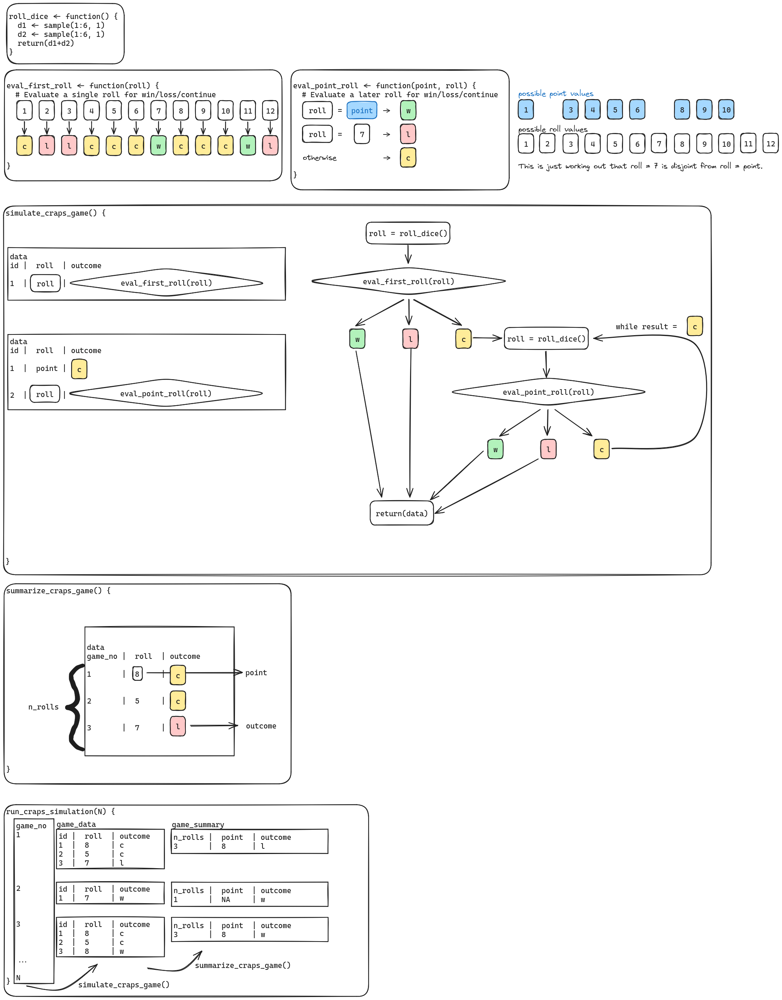

Pseudocode: Craps Simulation
Instructor Comments
I have scaffolded this set of instructions very carefully.
Please proceed sequentially through this document, and do not move onto the next step until you have completed the present step.
My goal in this class is to teach you how to solve hard problems by breaking them down. This assignment is the culmination of that process, where you demonstrate that you have the tools to solve these hard problems.
You WILL get confused and miss steps if you do not follow the instructions sequentially.
Understanding the game flow
ChatGPT provides the following pseudocode for playing a game of craps. You can see the full script here (it goes a bit beyond pseudocode).
Note that this pseudocode seems to be relatively Pythonic. You will have the opportunity to write (somewhat different) pseudocode later, but for now, work with this pseudocode to develop an understanding of the game.
function playCraps():
while true:
// Roll the dice
roll = rollDice()
// Check the outcome of the roll
if isComeOutRoll(roll):
handleComeOutRoll(roll)
else:
handlePointRoll(roll)
// Display current status and ask if the player wants to continue
displayCurrentStatus()
if not playAgain():
break
function rollDice():
die1 = random(1, 6)
die2 = random(1, 6)
total = die1 + die2
return total
function isComeOutRoll(roll):
return roll in [2, 3, 7, 11, 12]
function handleComeOutRoll(roll):
if roll in [7, 11]:
playerWins()
elif roll in [2, 3, 12]:
playerLoses()
else:
point = roll
displayPointMessage(point)
handlePointRoll(point)
function handlePointRoll(point):
while true:
roll = rollDice()
if roll == point:
playerWins()
break
elif roll == 7:
playerLoses()
break
function playerWins():
displayWinMessage()
function playerLoses():
displayLoseMessage()
function displayPointMessage(point):
// Display the point for the current round
function displayWinMessage():
// Display a message indicating the player has won
function displayLoseMessage():
// Display a message indicating the player has lost
function displayCurrentStatus():
// Display the current status of the game
function playAgain():
// Ask the player if they want to play again
// Return True if the player wants to play again, False otherwiseFlowchart
Create a flowchart illustrating how the game unfolds, using the function names provided in the ChatGPT code. Include this as a PNG file in the repository and link to it here.

Issues with the code
The condition isComeOutRoll(roll) only evaluates whether the roll is one of [2, 3, 7, 11, 12]. If the roll is NOT one of these numbers (e.g., 4, 5, 6, 8, 9, or 10), it directly bypasses handleComeOutRoll(roll) and jumps to handlePointRoll(roll). This means handleComeOutRoll(roll) is never executed for rolls that establish a point, making the call to displayPointMessage(point) unreachable! This is why I omitted displayPointMessage(point) from my flowchart.
Single game data structure
It’s one thing to write a set of instructions/pseudocode for how to play a game, but it’s a separate task to figure out how to computationally simulate the game. For instance, in a simulation you often need to keep track of each move, and then compute summary statistics about the game to use when compiling simulation data.
Draw/sketch a tabular data structure that can store the results as you progress through a single game of craps. Keep track of how many times you’ve rolled the dice. What additional columns do you need? Hint: Each roll of the 2 dice should be a row.
| Game ID | Roll Number | Die 1 | Die 2 | Total Roll | Is Come-Out Roll? | Point (if applicable) | Outcome | Game Status | Play Again? |
|---|---|---|---|---|---|---|---|---|---|
| 1 | 1 | 4 | 3 | 7 | Yes | N/A | Player Wins (Direct Win) | Game Over | True |
| 2 | 1 | 1 | 2 | 3 | Yes | N/A | Player Loses (Direct Loss) | Game Over | True |
| 3 | 1 | 3 | 2 | 5 | No | 5 | Point Set | Continue | |
| 3 | 2 | 4 | 3 | 7 | No | 5 | Player Loses (Point Phase) | Game Over | True |
| 4 | 1 | 6 | 4 | 10 | No | 10 | Point Set | Continue | |
| 4 | 2 | 3 | 3 | 6 | No | 10 | Continue Rolling | Continue | |
| 4 | 3 | 5 | 5 | 10 | No | 10 | Player Wins (Point Phase) | Game Over | False |
Summary data structure
Draw/sketch a summary tabular data structure to store summary information from a single game of craps.
Hint: Each game of craps should yield a single row in your table.
| Game ID | Total Rolls | Point (if applicable) | Outcome | Play Again? |
|---|---|---|---|---|
| 1 | 1 | N/A | Player Wins | True |
| 2 | 1 | N/A | Player Loses | True |
| 3 | 2 | 5 | Player Loses | True |
| 4 | 3 | 10 | Player Wins | False |
Simulating a game of craps
In this part of the assignment, you’ll spend the time figuring out how to implement craps as a computational simulation by adapting the ChatGPT pseudocode. Your code structure will be different from ChatGPT’s structure because you are going to generate data to estimate various conditional probabilities.
Requirement 1:
You must have a function to simulate a single craps game, simulate_craps_game, which returns a data frame with at least the following columns:
id(# times the dice has been rolled)roll(the total roll of the dice)outcome(win, loss, or continue)
You may have additional columns if you want.
Requirement 2:
You must include a summary function named summarize_craps_game that takes the data frame returned by simulate_craps_game and generates a single row with the following columns:
n_rolls, the number of times the dice were rolled in the game,outcome, whether the game was won or lostpoint, the total of the dice on the first roll, if the game continued past the first roll, and NA otherwise.
Requirement 3:
You must include a function to run your simulation, run_craps_simulation(N) that takes a single integer argument N which determines the number of games which will be played.
Think carefully about how you want to structure your code - do you want to return the full results for each game and then summarize, or do you want to summarize before you return the full results?
Planning Helper Functions
Consider helper functions you will need to write to implement the game of craps. For each function, define the input, output, and provide a comment to explain what the function will do.
Here is pseudocode for a function that simulates the roll of the dice in craps to demonstrate the required format.
roll_dice <- function() {
# Input: None
# Output: An integer from 2 to 12 (sum of two dice rolls)
# Description: Simulates rolling two dice and returns their sum
d1 <- sample(1:6, 1)
d2 <- sample(1:6, 1)
return(d1 + d2)
}Here is the eval_first_roll function.
eval_first_roll <- function(roll) {
# Input: Integer roll (sum of two dice)
# Output: A character representing 'w' (win), 'l' (loss), or 'c' (continue)
# Description: Evaluates the first roll for a win, loss, or setting a point
if (roll %in% c(7, 11)) {
return("w") # Win
} else if (roll %in% c(2, 3, 12)) {
return("l") # Loss
} else {
return("c") # Continue (Point Phase)
}
}Now let’s do the eval_point_roll function.
eval_point_roll <- function(point, roll) {
# Input: Integer point (point to match), Integer roll (sum of two dice)
# Output: A character representing 'w' (win), 'l' (loss), or 'c' (continue)
# Description: Evaluates a roll during the Point Phase for win, loss, or continue
if (roll == point) {
return("w") # Win
} else if (roll == 7) {
return("l") # Loss
} else {
return("c") # Continue
}
}Planning Main Functions
Update your flowchart from Section 2.1 to match the requirements of this section. Your flowchart should have separate blocks for each function. Which helper function(s) will be called inside each required function?

Simulating a full game
Fill in the pseudocode below to specify how you would return the single game data structure you created in Section 2.3 above. Remember to fill in the input parameter inside the function definition as well as the comment.
simulate_craps_game <- function() {
# Input: None
# Output: A data frame with columns id, roll, and outcome
# Description: Simulates a single game of craps
# Initialize data frame to store rolls and outcomes
data <- data.frame(id = integer(), roll = integer(), outcome = character(), stringsAsFactors = FALSE)
id <- 1
# First roll
roll <- roll_dice()
outcome <- eval_first_roll(roll)
data <- rbind(data, data.frame(id = id, roll = roll, outcome = outcome))
# Check if the game continues into the Point Phase
if (outcome == "c") {
point <- roll # Set the point
while (TRUE) {
id <- id + 1
roll <- roll_dice()
outcome <- eval_point_roll(point, roll)
data <- rbind(data, data.frame(id = id, roll = roll, outcome = outcome))
if (outcome != "c") {
break # Exit the loop when the game ends
}
}
}
return(data)
}Summarizing a game
Add a function that summarizes a game of craps (e.g. go from the data structure in Section 2.3 to the data structure in Section 2.4).
summarize_craps_game <- function(game_data) {
# Input: A data frame with columns id, roll, and outcome
# Output: A single-row data frame with summary statistics for the game
# Description: Summarizes a single game of craps
n_rolls <- nrow(game_data)
outcome <- game_data$outcome[n_rolls]
point <- ifelse(any(game_data$outcome == "c"), game_data$roll[game_data$outcome == "c"][1], NA)
return(data.frame(n_rolls = n_rolls, point = point, outcome = outcome, stringsAsFactors = FALSE))
}Simulating many games
run_craps_simulation <- function(N) {
# Input: An integer N (number of games to simulate)
# Output: A data frame summarizing each game
# Description: Simulates N games of craps and summarizes results
# Initialize data frame for game summaries
game_summaries <- data.frame(n_rolls = integer(), point = integer(), outcome = character(), stringsAsFactors = FALSE)
for (i in 1:N) {
game_data <- simulate_craps_game()
game_summary <- summarize_craps_game(game_data)
game_summaries <- rbind(game_summaries, game_summary)
}
return(game_summaries)
}Planning for implementation
What parts are still missing for you to write code implementing craps based on your pseudocode? What do you expect you will need to do before/during the coding process? Make a plan for next week’s work. Where will you start?
To implement craps, I will ensure edge cases like immediate wins/losses and Point Phase transitions are handled correctly. I will integrate helper functions like roll_dice, eval_first_roll, and eval_point_roll into simulate_craps_game, summarize_craps_game, and run_craps_simulation. Next week, I’ll refine each part step by step, validating with both small and large-scale simulations.